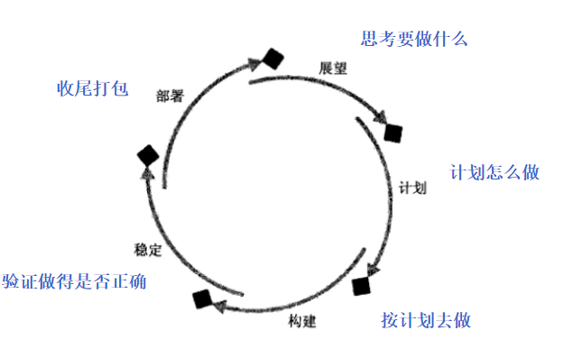
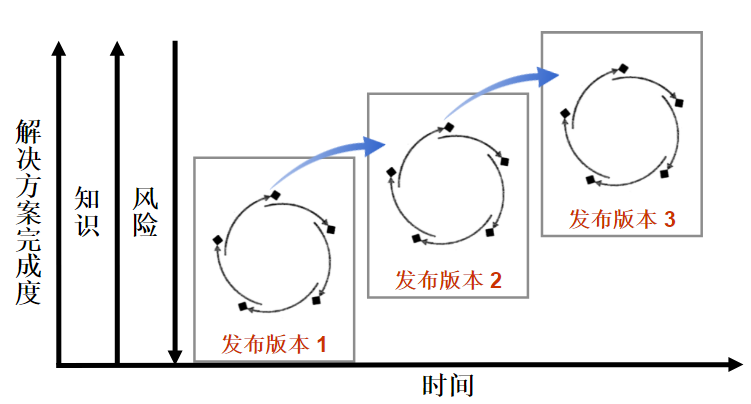
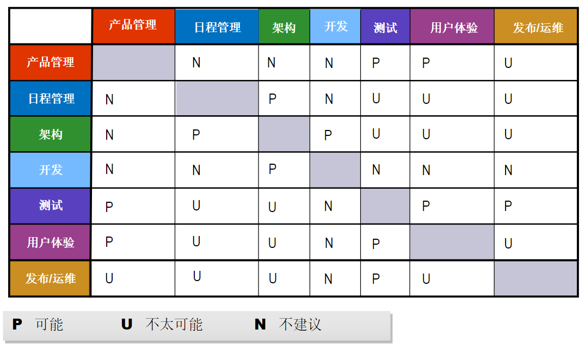
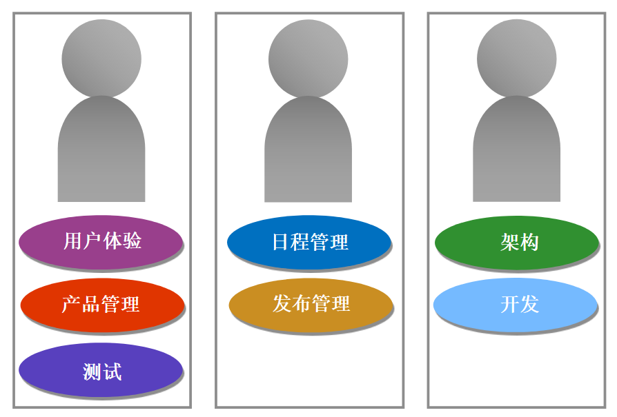
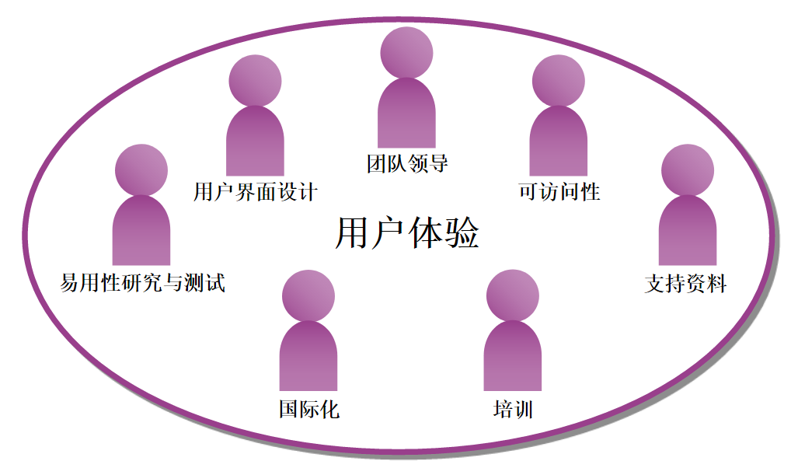
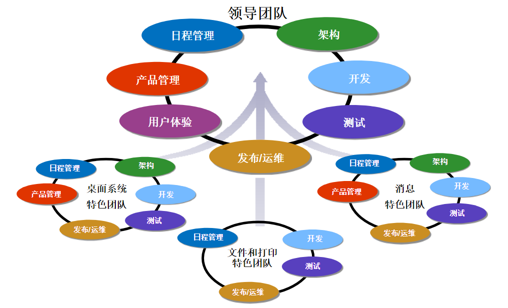
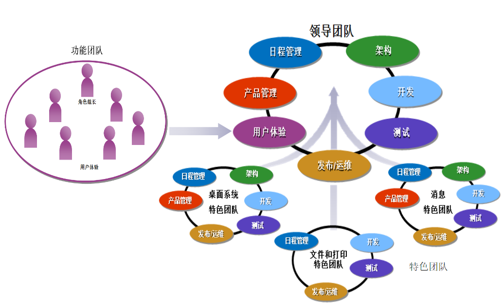

MSF过程模型
MSF的设计旨在正确的时间、给正确的人、以正确的指导。
而在整个解决方案的生命周期，如何做到？微软提出了一个管理模型，这个模型结合了项目管理和流程实施。
项目管理专注于优化解决方案交付流程，更有效和高效地使用项目资源。
流程实施则专注于定义、构建和部署解决方案，以符合利益关系人的需要和期望。
关键元素
历程
每个项目都要经过一个生命周期，一个完整的生命周期可以划分为不同的阶段，每个阶段都有一些特定的活动。而MSF对于生命周期的管理，不是传统的阶段性的过程管理，比如瀑布模型，MSF称为历程管理，后续就演进为历程模型。
为什么叫历程？历程是一组活动，虽然这些活动的开始有先有后，但是它们可能很快就完成了或者同时在进行。
阶段则不同，阶段经常包含大量工作，并且各阶段需要按照线形的方式进行，即进入下一个阶段前，上一个阶段必须完成。
实施历程的最终目标是定义、构建、和部署解决方案，都需要这么几个过程：
- 思考要做什么
- 计划怎么做
- 按计划去做
- 验证做得是否正确
- 收尾打包。

检查点
检查点用来计划和监测项目进展，确定交付成果和活动是否完成。
检查点给团队提供了直接的机会，
一方面是能够和客户重新确定项目范围，或者调整项目范围来反映客户或业务需求的变更；
一方面还可以在项目过程中为适应可能会出现的风险和问题而做出调整。
主要检查点
主要检查点用来标记主要活动的完成和交付成果的完成，标识历程的结束。
过渡检查点
过渡检查点由团队来定义，用来表示某个历程的进展情况，或者将大的工作拆分为易处理的小块工作。
迭代
只有当解决方案被部署到产品环境中并且被有效地使用时，才能显现其商业价值。这和MSF的基本原则之一，递增的交付价值是相符合的。

MSF迭代方法有两个主要的指导原则：
“建立活的文档”原则
活，即是文档和项目变化保持一致。比如SRS文档，展望阶段完成其中的第一、二章，而在计划阶段开始构建第三章，第三章的内容也并非在计划阶段必须完成的，到了构建阶段仍然需要更新，持续改进、完善，直到构建阶段结束时则被冻结。
“完成要早，定稿要迟”原则
尽快完成某项活动，尽快获得其他人对于活动结果的反馈意见，但是不要太早宣布最终的结果，因为项目的任何变化都可能改变结果。
这一条和上一条的原则非常契合，其实文档即代码，代码即文档。
五大历程
五大历程其实也是做这么几件事情：
- 思考要做什么
- 计划怎么做
- 按计划去做
- 验证做得是否正确
- 收尾打包。
既然是管项目，那用5W2H管理方式，其实也是相符的，无论是开展项目管理或技术活动，都需要思考。
Why： 展望历程-远景/范围分析
Who：展望历程-利益关系人分析（项目赞助人、客户、用户等） ；各个历程中的团队代言群
What：项目范围-高层需求是什么？验收标准是什么？
How：展望历程-概念设计 计划历程、构建历程-设计方案、测试方案
How Many：资源-人力、物力，风险管理
When：计划历程-项目计划
Where：管理历程-评估解决方案的交付环境；构建和稳定历程-测试环境；部署历程-运维发布环境
熟悉五大历程可以从以下几个方面：
目标
团队焦点
关键交付结果
关键检查点
做什么？（团队做什么-目标；代言群做什么？-团队焦点）
谁来做？谁负责？（谁来做-涉及的代言群 谁负责-主导代言群，要理解为什么由其负责）
输出什么？（输出什么？-关键交付成果）
输出的标准是什么？（输出的标准是什么？-关键检查点）
展望历程-思考做什么
确认利益相关人，产品管理
利益关系人分析包括三个活动，确定利益关系人、确定利益关系人优先级、了解利益关系人。
在整个项目生命周期中，需要确保和关键利益关系人的沟通，确保关键利益相关人参与。项目应该尽早确定利益关系人，特别是关键利益关系人。
随着项目解决方案的不断清晰，可能会加入新的利益关系人。
利益关系人包括：
- 项目赞助人；
- 客户，也称为商业赞助人；
- 用户
组建核心团队，日程管理
选择和准备项目团队的目的，是在正确的时间给正确的项目配备正确的资源。为了达到这个目标， 必须谨慎地为项目配备人员，不仅要具备项目所需的技能，而且做好了为项目付出的准备。
项目团队的人员配备应当是一个流动的过程，在项目定义完成时加入合适的有技能的人员。
在各历程当中根据对技能和能力要求的不同来更换人员；
当完成计划的工作后，撤出相应的团队成员。一般在展望历程，由一些关键人员组成核心团队，帮助策划解决方案，待到稳定历程，核心团队则会退出。
要让谁加入团队，以及何时加入，主要依据的是许多现实和主观因素，这些主观因素包括：团队凝聚力、团队搭配、团队的准备就绪程度、开发风格、领导风格等。
组织可能花费大量精力在团队的准备工作上面。准备就绪包括两个部分：技术准备就绪和心理准备 就绪（比如个人意愿和心理准备）
角色合并原则

不要将原本立场就有冲突的角色合并指派给同一个人。
不同角色在内在要求的技能没有相关性的，也不建议将其合并。
最小团队
- 至少3位全职人员

功能团队

特色团队

功能&特色团队

技术准备就绪流程，日程管理
组织可能花费大量精力在团队的准备工作上面。准备就绪包括两个部分：技术准备就绪和心理准备就绪（比如个人意愿和心理准备）。MSF准备就绪管理纪律，是MSF的核心部分之一，主要针对的就是技术准备就绪。
- 定义
- 评估
- 改变
- 评价
定义解决方案，产品管理、UE、架构
定义问题与机会
建立共同远景
定义高层需求
高层需求需要符合“SMART”原则，而团队撰写需求时，就要顺便考虑到是如何测试/评估这个需求是否符合这个原则。
检验——观察行为，比如LD指示灯状态如预期的那样闪烁。
分析——可以通过采集的数据分析加工精度。
演示——展示可以正常加工，界面显示运行状态和位置。
测试——可以通过示波器采集波形图，确定信号的误差精度。
建立用户信息
概念性解决方案
定义验收标准
MSF有三种验收标准：用户验收标准、运维验收标准、客户验收标准。
产品管理负责客户验收标准。
UE负责用户验收标准。用户验收，顾名思义，从最终用户的角度出发，主要专注于易用性和功能方面。一般情况下，我们要选择关键用户来【验收】解决方案，这些关键用户熟悉用户的操作和使用习惯，才可以代表使用者进行验收，且应该在展望历程与项目团队一起工作来定义一套验收的具体标准。
验收标准是需要团队必须遵守的，且一般情况下不进行修改。
初始风险分析，日程管理
风险是指“造成损失或伤害的可能性”。MSF把风险定义为是对项目结果产生正面或负面影响的任何事件或状况。风险是指预期的问题，具有不确定性，会对结果造成潜在的负面影响或给项目的价值、控制、功能、质量、交付日期带来潜在的损失。问题是指项目中已经确实出现的情况或事情。 反之，风险如果没有得到有效处理也可能演变成问题。当风险被合理控制时，将会代表了获得回报的可能性。
风险识别的目标是让团队找出项目的风险，并且建立风险清单。风险识别步骤的输入信息，就是与特定项目风险相关的项目相关的业务、技术、组织、环境，以及团队的经验、风险知识库等都可以作为风险识别的输入。利益相关人 、人员技能、项目范围、管理流程、项目采用的技术、相关环境等都可能存在风险，风险识别可以从这些维度进行分析。
风险管理流程
风险管理流程的步骤只是逻辑步骤，实际运用中可以没有明确的先后顺序。团队可以根据积累的风险经验，反复进行识别——分析——计划的步骤，并且只有在特定的周期才会进行学习的步骤。
识别风险
描述风险要以自然语言来表达，风险描述的第一部分称为状况，它描述了团队认为可能会造成项目损失的情况或特征。风险描述的第二部分称为后果，它描述的是不希望看到项目出现的特征或情况。
分析并排列风险的优先顺序。
风险分析最终需要确定风险的优先顺序。
排列优先顺序最简单、通用的量化方法是根据风险曝光程度的数值进行分类，这个数值是风险概率和风险影响力相乘的结果。
风险处理的计划与时间安排。
追踪并报告风险的状况。
控制风险减轻与项目变更活动。
风险控制指的是执行风险行动计划的流程，以及跟它们有关的状况报告。风险控制的另一个用途是当风险状况或风险计划的改变导致项目功能、资源或时间表改变时，能够提出项目变更控制的请求。
从解决风险的过程中学习。
风险学习指的是把学到的经验教训和相关的项目交付成果加以整理，成为让团队和企业能够重复运用的知识。
计划历程
计划怎么做
- 解决方案计划
- 解决方案设计-规格设计
- 解决方案设计-设计方案
构建历程
按计划去做
按计划执行，程序管理
基础架构的开发和方案验证，架构
构建版本，开发
代码评审，开发
构建用户体验交付，UE
测试方案，测试
构建阶段的测试，并非测试代言群的专利，任何想帮助团队提升解决方案质量的角色都可以参与，开发可以针对代码和函数进行单元测试。测试可以协助开发设计单元测试的数据。开发之间可以进行同行代码级别的静态测试。测试可以提前介入验证解决方案对设计的符合度。
问题跟踪及解决，测试和开发
稳定历程
验证做得是否正确
提高解决方案的质量，使其符合发布标准以便能部署到实际业务环境中。确认解决方案符合利益关系人的需求与期望。从用户的角度来确认解决方案的易用。最小化解决方案部署和在目标环境中运维的相关风险，提高成功率。
发布前测试，测试
用户验收测试，UE
试运行准备，UE/发布
部署历程
收尾打包
管理历程
管理历程在其它历程开始前开始，且贯穿始终。管理历程的目标是指导其它历程的活动，确保可以重复且可靠地交付解决方案。各种流程的构建和优化是管理历程的焦点。管理历程致力于持续提升团队的能力和效率，以及解决方案的质量和管理经验的可复用性。
程序管理作为管理历程的启动和完成项目的主导代言群，则需要在项目结束后主持团队进行项目回顾，比如：
- 需要总结团队哪些地方做得好及其原因。
- 需要回顾团队哪些地方可以做得更好及改进方法。
- 需要复盘并提炼团队的最佳实践。需要提供项目结案报告。